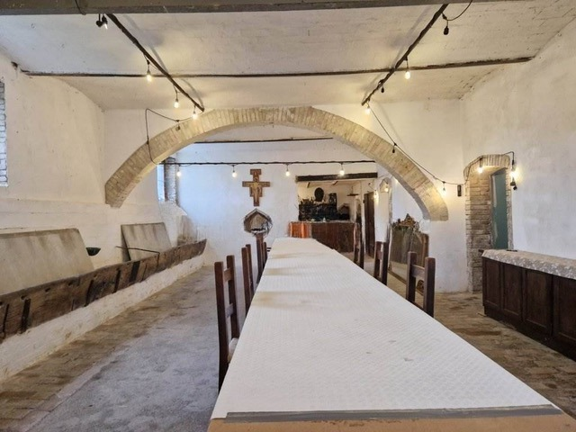

The first season opens in 2027 · Spring and Autumn
A studio of sacred and spiritual painting in Assisi, Italy. The focus of the school is finding the sacred and spiritual in art through the study of God's creation. For a season, allievi (students) live at the villa in the foothills of Assisi, work in the bottega (workshop) alongside the maestro, and share its rest, prayer and table.
In Mark's words: “It will be a restorative place for painters, writers etc. a quiet retreat with community.”
“My house was on the road St. Francis would walk to Gubbio.”Mark Balma, of his earlier home near Assisi
Spring and Autumn 2027 · Enrollment is not yet open
6 weeks
The full season, and the flagship. Time to carry a buon fresco from drawing to cartoon to wet plaster, and to live the full rhythm of creating, rest, prayer and community.
3 weeks
Joins the first or second half of a season, for those who can’t step away for six.
“For imitation is natural to man from his infancy… he is imitative, and acquires his rudiments of knowledge in this way.”Aristotle, Poetics
Students will learn the discipline of drawing, hand-eye coordination, and the observation of light and shadow while incorporating methods of the Old Masters: pencil, charcoal, silverpoint, red/black chalk and ink.
Mark Balma instructs students in the use of egg tempera and oil painting as practiced in 15th-century Europe by the Flemish Masters and Leonardo da Vinci. Accomplished students will also learn the art of buon fresco, working directly with Mark Balma on fresco murals.
disegno
Pencil, charcoal, silverpoint, red and black chalk, and ink: the discipline of the hand and the eye.
tempera
Egg tempera, as practiced in 15th-century Europe.
olio
Oil in the 15th-century manner of the Flemish masters and Leonardo da Vinci.
affresco · true fresco
Accomplished students work directly with Mark Balma on fresco murals.
An Italian villa in the fields and foothills below Assisi: a working atelier, shared meals, prayer, and the Umbrian countryside all around.

the master’s workshop
The allievi work alongside the maestro in his own studio, where sacred works and portraits are painted. Accomplished students work with Mark on fresco murals.

the table
A chef’s table in the vaulted refectory, and outdoor dining. The allievi share one table.

the chapel
In Mark's words: “The old stable will become a chapel, I am using all the old wooden mangers as materials for benches etc. it will also have a few frescoes!” Mass and prayer schedule [CONFIRM]

riposo · rest
Plenty of quiet time to pray, meditate, and rest, in the fields and foothills St. Francis walked.

In Assisi the art and the saints are one story. St. Francis lies in the Basilica that Cimabue and Giotto filled with frescoes; St. Clare of Assisi followed him in the same hills. The allievi come here as pilgrims, not tourists, and the land itself invites pilgrimage: to the Basilica of St. Francis, to Norcia, Cascia, Foligno and Perugia, and to Terni, where Mark is painting Women of Faith for the Church of the Immaculate Conception.
“Art imitates nature as well as it can, as a pupil follows his master; thus it is sort of a grandchild of God.”Dante Alighieri
Imitatio continues this tradition in the same hills.
Pellegrinaggi · Pilgrimages: which places, how often, how pilgrims travel, and any cost [CONFIRM]. Fridays set aside for pilgrimage? [CONFIRM]
“In this chapter of my life I want to continue creating art in the church using the variety of techniques that I have practiced and hopefully passing on to others what I have learned in a studio/school I will create in Assisi, Italy. It is there I will also continue to explore the art of portraiture and the spirit in art that brings us all closer to God.”Mark Balma